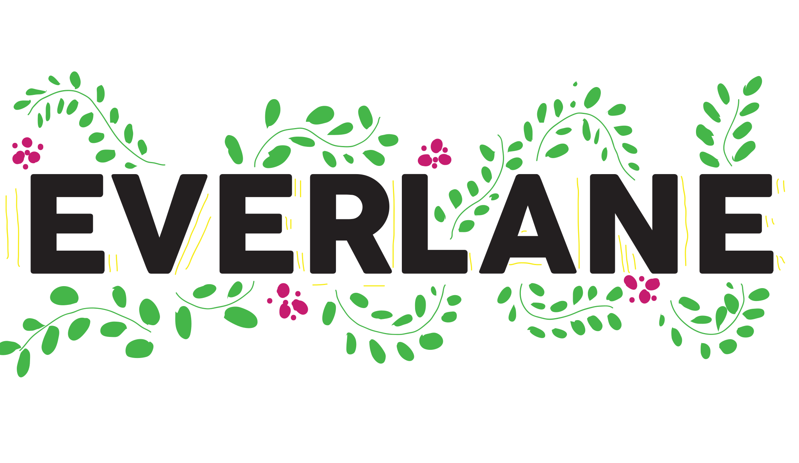
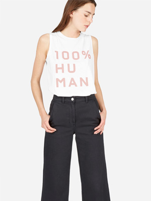
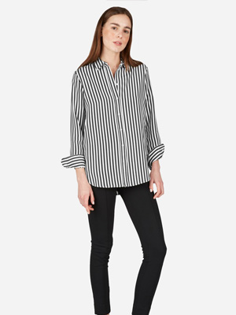
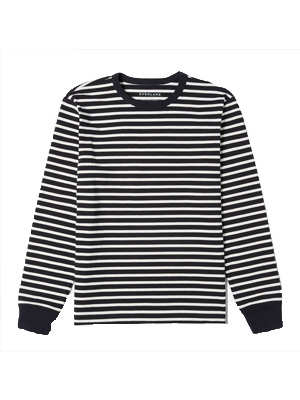

What can I get here?
Basics for Women.
Basics for Men.
Everlane
vs
Industry
Only hires factories after detailed research. Lists all the factories on their
website
and conducts site visits.
Is very
transparent
about how they price their clothing. Adjusts the price of their clothes based on price fluctuations in materials
Includes
inforgraphics
that tells the consumer what is accounted for in the pricing of their clothing
Typical markup of clothing is around 50%
Contracts companies to hire factories to produce clothing, thus removing themselves from the process
Heavy reliance on low-cost production, leading to increased burden on the countries in which clothes are manufactured
Constantly pushing factories for lower production costs, at the expense of the wages and
working conditions
of workers
  
Fast Fashion
Home
Problem
Brands